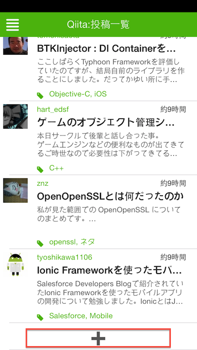
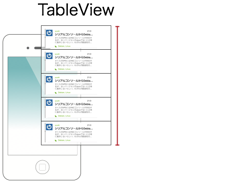
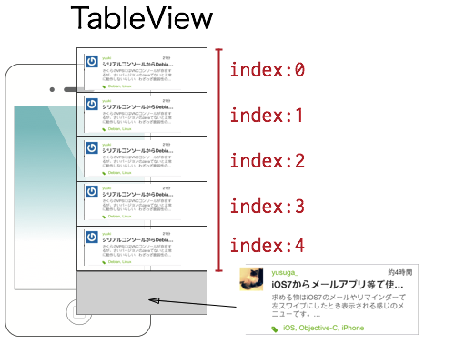
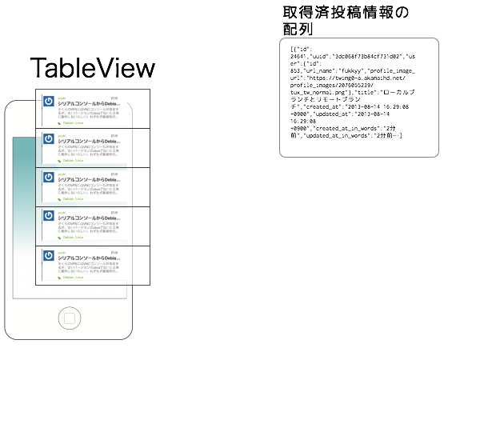
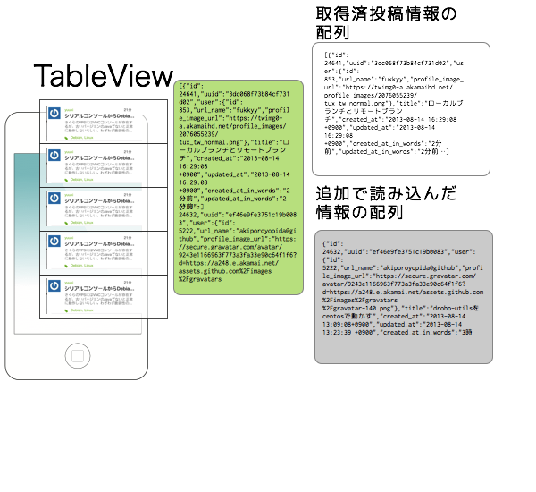
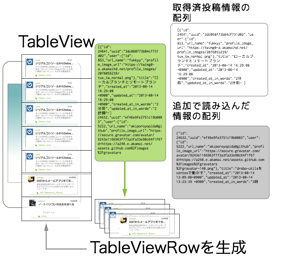
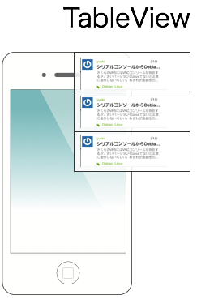
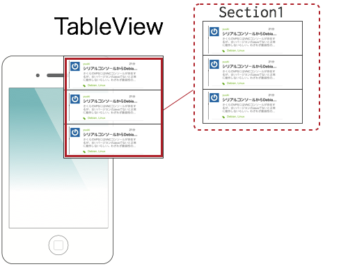
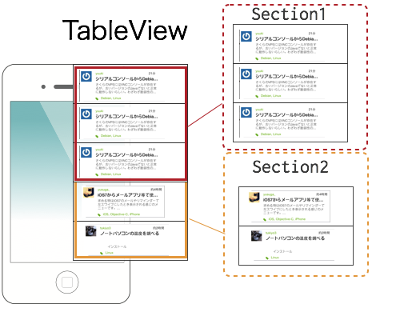

- About the author
- Questions and Issues
- Edit and Contribute
- Introduction
- 1) JavaScript基礎
- 2) Titanium Classic基礎
- 3) イベント駆動型プログラミングの基礎
- 4) WebViewの使い方について学ぶ
- 5) TableViewの使い方について学ぶ
- 6) HTTPClientの使い方を学ぶ
- 7) Titanium Classic応用編
- 8) ソースコードの保守性をあげる工夫
- 9) TableViewを一工夫して利用する
- 10) 手軽に使えて開発効率があがるJavaScriptライブラリの紹介
- 11) 日付処理を便利に行えるmoment.js
- 12) 配列操作を便利に行えるUnderscore.js
- 13) Titanium Classic環境からAlloyに移行する
- 14) はじめてのAlloy
スクロールしたら追加の情報を読み込む
- 目次
- はじめに
- 実装方法のアイデア
- TableViewにあるInsertRowAfterメソッドを活用するイメージ
- TableViewにあるSetDataメソッドを活用
- TableViewSectionで投稿情報別に区切るイメージ
- どのアイデアを採択するか？
- 実装のポイントをまずは解説
- QiitaのWebAPIのページネーションについて
- TableViewSection作成時のheader指定について
- 画面下部までスクロールした時に発火させるイベント処理について
- 実装
- app.jsのソースコード
- style.jsのソースコード
- qiita.jsのソースコード
- 変更前
- 変更後
- mainWindow.jsのソースコード
- コード解説
- 最終的な実行結果
- iPhoneでの実行イメージ
- Androidでの実行イメージ
はじめに
私が作ったTiQiitaのユーザーインターフェースでは画面下部までスクロールしたら、追加の投稿情報を読み超えるようにボタンを配置してます。(以下キャプチャーの赤枠で囲った部分）

タイムラインのようなユーザインタフェースを持ったアプリケーションではこういう追加で読み込む処理は必須なものかと思いますが、Titanium Mobileでこれを実現する方法について解説します
実装方法のアイデア
TableViewを使って情報の追加を行う場合にいくつかのアプローチが考えられそうです。
TableViewにあるInsertRowAfterメソッドを使い、最後のRowの後に１つづつRowを追加する
すでに取得した投稿情報を何らかの形でローカルにキャッシュしておき、追加で読み込んだ情報と結合してTableViewにあるSetDataメソッドを使い、TableViewのRowのデータを全て再更新する
WebAPIにアクセスする度にTableViewSectionを作成して処理をする
上記３点についてどういう実装イメージになるのか以下に図解します。
TableViewにあるInsertRowAfterメソッドを活用するイメージ
現在のRowの件数を調べる

Rowの件数−１をした所が最後のindexになるのでそれを取得した上でinsertRowAfterの引数にそのindex値を指定する。

TableViewにあるSetDataメソッドを活用
起動時に取得した投稿情報を何らかの形でローカルにキャッシュする

追加で読み込んだ情報の配列と既存の情報の配列を結合する

結合した情報を１件づつ読み込みながらTableViewRowを作成しRowのデータを配列に格納する
setData()で③で生成した配列を指定してTableViewを再描画する

TableViewSectionで投稿情報別に区切るイメージ
まず、起動時に投稿情報を読み込みTableViewを作成

※TableView作成する際には、TableViewSectionを作成しそこに順番にRowを追加して最初の投稿情報を処理するイメージです。

追加で読み込んだ情報は別途TableViewSectionを生成してそこに順番にRowを追加したものを、最初のSectionの後に挿入します。
この段階での処理イメージとしては、投稿情報表示するTableViewには２つのTableViewSectionがありそれぞれに任意の件数の投稿情報が配置されたTableViewRowが配置されているイメージになります

どのアイデアを採択するか？
上記３点取り上げましたが、３番目のTableViewSectionで投稿情報別に区切るイメージが一番シンプルな実装方法なのでこれについて解説します。
なお、私が作ってるTiQiitaでは２番めのアイデアを採用してますが、この方法の実装では配列の結合処理、ローカルのキャッシュ処理など多岐にわたった知識が必要になることもあるため、取り上げませんでした。
実装のポイントをまずは解説
TableViewSectionで投稿情報別に区切る方法を実装していきます。実装自体はシンプルそうに見えるのですが、いくつかポイントになる箇所があるのでまずはその点について解説します。
QiitaのWebAPIのページネーションについて
QiitaのWebAPIにリクエストを投げる時に、何ページ目の情報を何件取得するのかオプションで指定することが出来るページネーションの機能が備わってます。
特にオプションの指定をせずに
https://qiita.com/api/v1/items
にアクセスすると、1ページ目の情報を20件取得する仕様になってます。（詳しくはQiitaのWeb APIのドキュメントを参照してください）
例えば、2ページ目の情報を取得したい場合にはURLの末尾に?page=ページ名を付け加えます。具体的には以下のようにします。
https://qiita.com/api/v1/items?page=2
また、リクエスト辺りの取得件数を5件に制限したい場合には?per_page=件数とすることで処理ができます。具体的には以下のようにします。
https://qiita.com/api/v1/items?per_page=5
上記2つを組み合わせて利用することも出来ます。パラメータを組み合わせる場合には、& で連結させます。以下は、2ページ目の情報を5件取得するという意味になります
https://qiita.com/api/v1/items?page=2&per_page=5
TableViewSection作成時のheader指定について
1つのタイムラインのようなユーザインタフェースに見せるため、TableViewSection作成時にheaderViewやheaderTitleの設定は行わないようにします
画面下部までスクロールした時に発火させるイベント処理について
画面下部までスクロールした状態を検知するのにscrollEnd イベントを利用します。その際に
- WebAPIからデータを取得
- 起動時に最初に表示するページ情報を保持しておきscrollEnd イベント発火のタイミングでその保持してるページ情報を1つ増加させる
- データ取得後にTableViewSectionを生成した上で投稿情報を追加する
という処理を行うのですが、上記処理途中にスクロール出来る状態のままにしておくとscrollEndイベントが頻発してしまう可能性があります。
それを防ぐためにTalbeViewのスクロールを一時的に利用不可にしつつ、処理途中であることを明示したほうが使い勝手の良いアプリケーションにつながると思います。
実装
これまで作ってきたアプリケーションをベースに開発をしていきます。
app.jsのソースコード
app.jsはそのまま流用します。念のためソースコードを以下記載しておきます
var mainWindow,win;
mainWindow = require("mainWindow");
win = mainWindow.createWindow();
win.open();
style.jsのソースコード
引っ張って更新処理を実装するで利用したソースコードをそのまま流用します。念のためソースコードを以下記載しておきます
exports.mainTable = {
"width": Ti.UI.FULL,
"height": Ti.UI.FULL,
"backgroundColor": "#fff",
"separatorColor": "#ccc",
"left": 0,
"top": 0
};
exports.row = {
"width": Ti.UI.FULL,
"height":60,
"borderWidth": 0,
"className":"entry"
};
exports.iconImage = {
top:5,
left:5,
width:40,
height:40
};
exports.textLabel = {
"width":250,
"height":50,
"top":5,
"left":60,
"color":"#222",
"font":{
"fontSize":16,
"fontWeight":"bold"
}
};
// 引っ張って更新処理中の色を指定
exports.refreshControl = {
tintColor:'red'
};
// QiitaのWebAPIから情報を読み込んでいる状態を示すために ActivityIndicatorを配置しためので
// その設定値
exports.actInd = {
top:"20%",
left:"30%",
height:Ti.UI.SIZE,
width:Ti.UI.SIZE,
zIndex:0,
color: "#f9f9f9",
backgroundColor:"#444",
font: {
fontFamily:'Helvetica Neue',
fontSize:16,
fontWeight:'bold'
},
message: 'Loading...',
style:Ti.UI.iPhone.ActivityIndicatorStyle.DARK
};
qiita.jsのソースコード
QiitaのWebAPIにアクセスする際に何ページ目を取得するのか指定する必要があります。関数の引数にページ番号を設定し、かつ、QiitaのWebAPIへのアクセス時にページ番号のオプションを指定します
変更前
exports.getItems = function(callback){
var xhr,qiitaURL,method;
qiitaURL = "https://qiita.com/api/v1/items";
変更後
exports.getItems = function(page,callback){
var xhr,qiitaURL,method;
qiitaURL = "https://qiita.com/api/v1/items?page=" + page;
最終的には以下のようになります
exports.getLocalJSON = function(){
var sample,file,body;
sample = Ti.Filesystem.getFile(Ti.Filesystem.resourcesDirectory, "sample.json");
file = sample.read().toString();
body = JSON.parse(file);
return body;
};
// 今回拡張する機能
exports.getItems = function(page,callback){
var xhr,qiitaURL,method;
qiitaURL = "https://qiita.com/api/v1/items?page=" + page;
Ti.API.info("qiitaURL is" + qiitaURL);
method = "GET";
xhr = Ti.Network.createHTTPClient();
xhr.open(method,qiitaURL);
xhr.onload = function(){
var body;
if (this.status === 200) {
body = JSON.parse(this.responseText);
Ti.API.info("number is :" + body.length);
callback('ok',body);
} else {
Ti.API.info("error:status code is " + this.status);
}
};
xhr.onerror = function(e) {
var error;
error = JSON.parse(this.responseText);
Ti.API.info(error.error);
};
xhr.timeout = 5000;
xhr.send();
};
mainWindow.jsのソースコード
ユーザインタフェース側の処理が多くなるため、上記3つと比較すると少し長くなりますが、先にソースコード全体を以下に記載します。
var style = require("style"),
mainTable = Ti.UI.createTableView(style.mainTable),
actInd = Ti.UI.createActivityIndicator(style.actInd),
qiita = require("qiita"),
pageNumber = 1, // (1)
pageSection = 0; // (2)
exports.createWindow = function(){
var win = Ti.UI.createWindow({
title:"QiitaViewer"
});
getQiitaItems(pageNumber,function(items){ // (3)
var section = Ti.UI.createTableViewSection();
Ti.API.info("起動時にWebAPIからデータを取得しました");
mainTable.setData([createSection(items,section)]); // (4)
pageNumber++;
});
win.add(mainTable);
win.add(actInd);
return win;
};
mainTable.addEventListener('scrollEnd',function(e){
// (5)
mainTable.scrollable = false;
mainTable.opacity = 0.3;
getQiitaItems(pageNumber,function(items){ // (6)
var section = Ti.UI.createTableViewSection(),
insertSection = createSection(items,section); // (7)
mainTable.insertSectionAfter(pageSection,insertSection); // (8)
// (9)
mainTable.scrollable = true;
mainTable.opacity = 1.0;
pageNumber++;
pageSection++;
});
});
// (10)
function getQiitaItems(page,callback){
if (Ti.Network.online === false){
alert("利用されてるスマートフォンからインターネットに接続できないため情報が取得できません");
} else {
actInd.show();
qiita.getItems(page,function(status,items){
actInd.hide();
return callback(items);
});
}
};
// (11)
function createSection(items,section){
var _i,_len,style = require("style");
for (_i = 0, _len = items.length; _i < _len; _i++) {
row = Ti.UI.createTableViewRow(style.row);
textLabel = Ti.UI.createLabel(style.textLabel);
iconImage = Ti.UI.createImageView(style.iconImage);
iconImage.image = items[_i].user.profile_image_url;
textLabel.text = items[_i].title;
row.add(textLabel);
row.add(iconImage);
section.add(row);
}
return section;
};
コード解説
- 起動時に表示するページ数を設定
- TableViewSectionの挿入箇所となる変数を設定。
- 起動時にWebAPIからデータを取得して投稿情報が取得できたらmainTableにセット
- QiitaのWebAPIから取得した投稿情報を引数にして後述するcreateSection関数を利用してTableViewSectionを生成し、それをTableView.setData()を利用してTableViewに反映させる
- scrollEndイベント発火した時に処理中であることを示すために、TableViewのscrollableの値をfalseに設定することで、スクロール出来ないように制御します。またその後のopacityの値をデフォルトの1.0から0に近い値（今回は0.3）に変更していますが、こうすることでTableView全体が少し暗くなり処理中であるというのが利用してるユーザさんにはより伝わりやすくなるかと思います。
- 後述するgetQiitaItems関数を利用して、QiitaのWebAPIから投稿情報を取得します。
- QiitaのWebAPIから取得した投稿情報を引数にして後述するcreateSection関数を利用してTableViewSectionを生成しておきます
- TableViewのinsertSectionAfterメソッドを利用して上記7.で生成したTableViewSectionを挿入します。
- 挿入処理が完了したので、TableViewのスクロール制御、透明度の設定をデフォルトの値に設定しなおしつつ、次に表示するページ数と、TableViewSectionの挿入箇所の変数をそれぞれ1つ増加させます
- 引数にページ数を渡しqiita.getItems()を呼び出してQiitaのWeb APIから投稿情報を取得します。投稿情報取得できたらその値をコールバック関数に渡します
- 引数にQiitaのWeb APIから取得できた投稿情報を渡して必要な要素が追加されたTableViewRowを順番に生成し、そのRowをTableViewSectionに順番に追加して、最後にそのTableViewSectionを返します
最終的な実行結果
スクロール中の状態を画面キャプチャー取れないので見た目にはわかりづらいのですが以下のようになります。
iPhoneでの実行イメージ

Androidでの実行イメージ